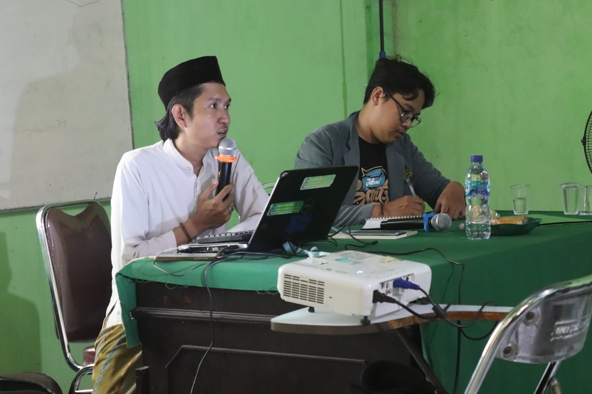

Seminar Jurnalistik - PKPT IPNU IPPNU UNU Cirebon
Erika Riani, 09 November 2023

Cirebon, 28 Oktober 2023 PKPT IPNU IPPNU UNU Cirebon menyelenggarakan kegiatan seminar jurnalistik yang bertema "Inovasi Jurnalistik di Era Digital 5.0" guna meningkatkan skill dan strategi. Bapak Muhammad Irfan Habibi, M.Pd., sebagai pemateri yang membahas berbagai aspek penting dalam inovasi jurnalistik di era digital terkini. Peserta yang terlibat pada seminar ini aktif dalam diskusi pertukaran gagasan dan wawasan yang berharga terjadi sepanjang acara. Seminar ini menunjukkan betapa pentingnya kesadaran akan perubahan konstan dalam dunia jurnalistik, dan bagaimana generasi muda, terutama mahasiswa, berusaha untuk selalu mengikuti perkembangan tersebut. Keberhasilan pelaksanaan seminar ini adalah hasil kerja keras dari IPNU dan IPPNU UNU Cirebon, serta antusiasme peserta yang tak kenal lelah dalam menggali pengetahuan baru di bidang jurnalistik. Dengan suksesnya seminar inovasi jurnalistik ini, UNU Cirebon dan IPNU-IPPNU membuktikan komitmennya untuk memajukan pendidikan dan mengembangkan kualitas jurnalistik di kalangan mahasiswa. Kegiatan ini juga menunjukkan bahwa kerja keras dan semangat kolaboratif dapat menghasilkan perubahan positif dan inspirasi bagi banyak generasi muda yang berharap meraih kesuksesan di dunia jurnalistik.